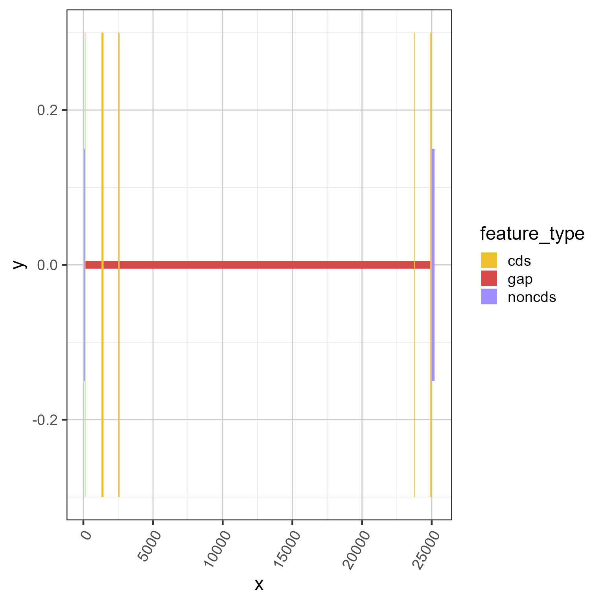
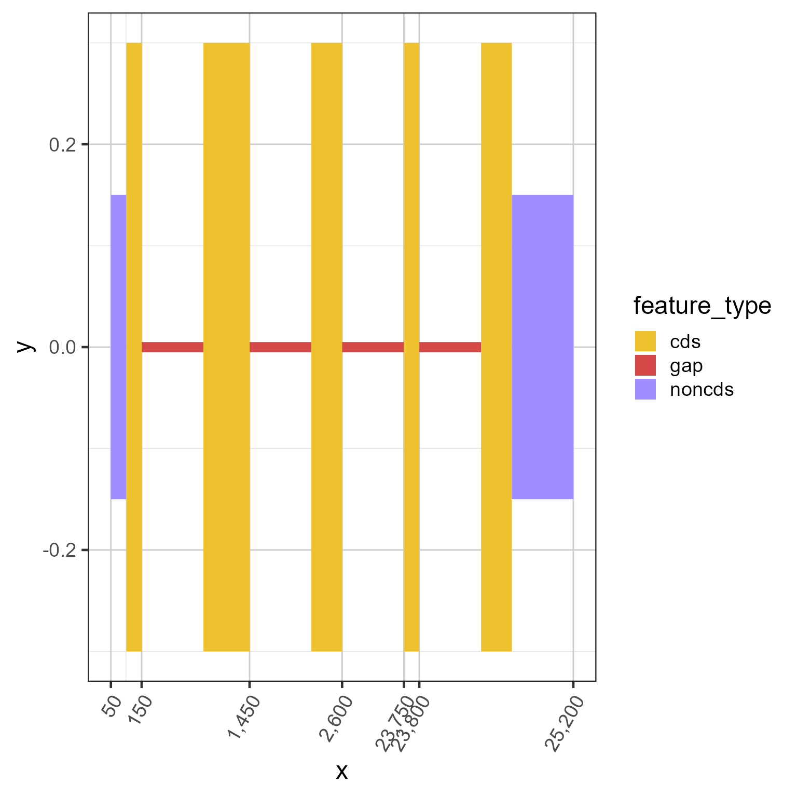
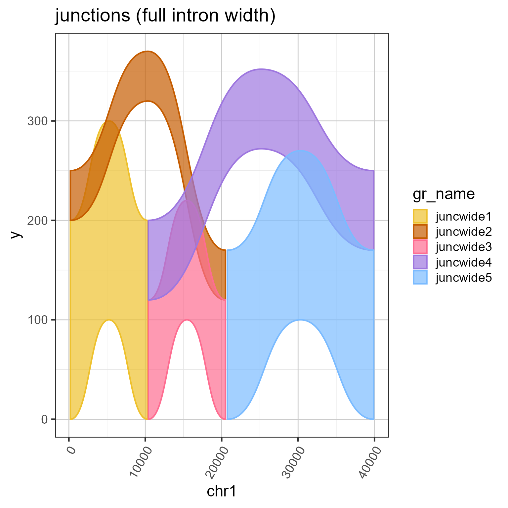

GRangesList to data.frame for ggplot2
Usage
grl2df(
grl,
keepGRvalues = TRUE,
keepGRLvalues = FALSE,
addGaps = TRUE,
width = 0.6,
widthV = c(exon = 0.6, cds = 0.6, noncds = 0.3, intron = 0.01, gap = 0.01, `NA` = 0.5),
width_colname = c("subclass", "feature_type"),
shape = c("rectangle", "junction"),
baseline = NULL,
scoreColname = "score",
sampleColname = "sample_id",
scoreArcMinimum = 200,
scoreFactor = 1,
scoreArcFactor = 0.5,
doStackJunctions = TRUE,
strandedScore = TRUE,
ref2c = NULL,
verbose = FALSE,
...
)Arguments
- grl
GRangesList, orGRangeswhich will be converted to a GRangesList of length=1.- keepGRvalues, keepGRLvalues
logicalindicating whether the output data.frame should include column values from GRangesList and GRanges, if available.- addGaps
logicalindicating whether to add gap GRanges between same-strand GRanges features within each GRangesList element. WhenTRUEthe gaps will be drawn between each GRanges rectangle.- width
numericvalue of default width for features whenshape="rectangle".- widthV
numericvector whose names are column values, using values from the first available colname fromwidth_colname. Some common defaults are provided. Values are suggested to be between 0 and 1, since each GRangesList element is separated by 1 y-axis unit.- width_colname
when
widthVis used to determine width based upon a column value, the first matching colname ofwidth_colnameis used.- shape
characterstring indicating whether input data should be processed as rectangular segments or splice junction arcs.- scoreColname, scoreArcMinimum, scoreFactor, scoreArcFactor
numericvalues used to determine junction ribbon height, the minimum height of the arc above the starting y-axis values based upon the score, the scaling factor for score values, and the relative height of the arc above the starting y-axis values multiplied by the score.- sampleColname
characterstring indicating the column containing biological sample identifier. This column is only used whentype="junction", and whendoStackJunctions=TRUE. It is used to ensure the junctions are only stacked within each sample. WhensampleColnameis not present incolnames(GenomicRanges::values(grl@unlistData))then all junctions are stacked.- doStackJunctions
logicalindicating whether to stack junctions at the start and end of junctions sharing the same coordinate, in order of shortest to longest junction width.- ref2c
optional output from
make_ref2compressed()used to compress axis coordinates during junction arc calculations.- verbose
logicalindicating whether to print verbose output.- ...
additional arguments are passsed to relevant downstream functions.
Value
data.frame with x,y coordinates, and id which is used
to group polygon coordinates when used with ggplot2::geom_polygon()
or ggforce::geom_shape(). When shape="rectangle" the colnames
include grl_name which are names of the input GRangesList
names(grl); gr_name which are names of the GRanges entries; and
other columns from the input GRanges entries. When shape="junction"
the data includes two polygons per junction, intended to be used
with geom_diagonal_wide_arc() for each side in order to
produce a ribbon arc. The data also includes sample_id which is
helpful for keeping data distinct when derived from multiple
samples.
Details
This function central to other plotting functions for GRanges and GRangesList objects. It currently has two modes:
shape="rectangle"is intended for exons/peaks/regions, for example plotting exons in a gene structure, or plotting ChIP-seq peaks.shape="junction"is intended for splice junctions, and returns two polygons that join junction ends with a the middle point raised above both baselines. The polygon height is determined by the score, resulting in visual reinforcement of the number of splice junction reads, usually compared to the sequence read coverage at adjacent exons.
An interesting argument is baseline which can be a named vector
of baseline y-axis values for each GRanges entry in the grl
GRangesList object. For example, it can be used to shift exons
up or down on the y-axis to make alternative exons more visibly
distinct. When used for Sashimi plots, it should also be
supplied to prepareSashimi() or exoncov2polygon() so
the coverages and splice junctions have consistent y-axis baselines.
When chromosome coordinates are compressed (to reduce the visible
width of introns) it affects the midpoint of splice junction arcs,
therefore ref2c should be supplied so the arcs are defined
using compresssed coordinates.
See also
Other Sashimi prep functions:
exoncov2polygon(),
gene2gg(),
make_ref2compressed(),
plotSashimi(),
prepareSashimi()
Examples
suppressPackageStartupMessages(library(GenomicRanges));
suppressPackageStartupMessages(library(jamba));
gr <- GenomicRanges::GRanges(seqnames=rep(c("chr1"), 7),
ranges=IRanges::IRanges(start=c(50, 100, 1300, 2500, 23750, 24900, 25000),
end=c(100, 150, 1450, 2600, 23800, 25000, 25200)),
strand=rep("+", 7),
feature_type=rep(c("noncds", "cds", "noncds"), c(1,5,1)));
names(gr) <- jamba::makeNames(rep("exon", 7));
grldf <- grl2df(gr, addGaps=TRUE);
gg1 <- ggplot2::ggplot(grldf, ggplot2::aes(x=x, y=y, group=id)) +
ggforce::geom_shape(
ggplot2::aes(fill=feature_type),
stat="unpack_polygon") +
colorjam::theme_jam()
print(gg1);

## For fun, compress the introns and plot again.
## This method uses x-axis breaks at the exon boundaries.
ref2c <- make_ref2compressed(gr);
gg2 <- gg1 +
ggplot2::scale_x_continuous(trans=ref2c$trans_grc) +
colorjam::theme_jam()
print(gg2);

## data can also be plotted using coord_transform()
## the main difference is that x-axis breaks are defined before the
## transformation, which can result in non-optimal placement
gg3 <- gg1 +
ggplot2::coord_transform(x=ref2c$trans_grc) + colorjam::theme_jam();
print(gg3);
## An example showing splice junction data
data(test_junc_wide_gr);
junc_wide_df <- grl2df(test_junc_wide_gr, shape="junction");
ggWide1 <- ggplot2::ggplot(junc_wide_df,
ggplot2::aes(x=x, y=y, group=gr_name, fill=gr_name, color=gr_name)) +
splicejam::geom_diagonal_wide_arc() +
colorjam::theme_jam() +
colorjam::scale_fill_jam(alpha=0.7) +
colorjam::scale_color_jam() +
ggplot2::xlab("chr1") +
ggplot2::ggtitle("junctions (full intron width)")
print(ggWide1);
